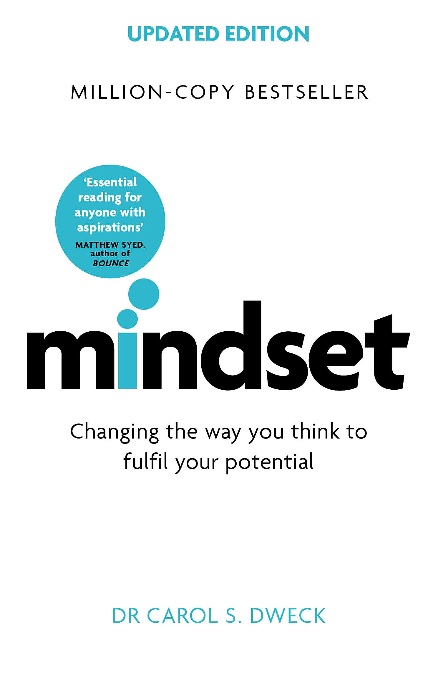

Mindset is psychologist Carol Dweck's account of her research on how beliefs about ability shape behaviour. Her central claim is a single distinction: a fixed mindset holds that your qualities are set in stone, while a growth mindset holds that they are a starting point that effort, strategy, and help can develop.
The book grew out of her studies of children facing hard puzzles. What struck her was that ability did not neatly predict who crumbled and who thrived. The belief about what struggle means did. If struggle signals that you are not smart, it is a threat; if it is simply how you get smarter, it is the interesting part.
From there she follows the idea into school, sport, business, relationships, and parenting, then closes with a chapter on how to change your own mindset. It reads less like a step-by-step programme and more like a lens: once you can see the fixed mindset at work in yourself or others, you can interrupt it.
Ability is a set quantity. Every task is a test of what you have. Avoid risk, protect the image.
Ability is developed. Every task is a chance to grow. Seek challenge, learn from setbacks.
Dweck sets out the puzzle behind the book: why do people of similar ability end up achieving such different amounts? She describes early research in which children were given increasingly hard puzzles, and notes that some of them met the difficulty with relish rather than despair.
Her conclusion is that the difference lay in belief, not skill: whether the child saw intelligence as fixed or as something that grows. The introduction names the two mindsets and previews how they will play out across the later chapters.
The foundational chapter. In the fixed mindset, every situation is implicitly a test of whether you have enough intelligence, talent, or personality: success proves it, failure threatens it. In the growth mindset, the same situations are chances to develop the ability in question, and both success and failure tell you what to do next.
Dweck traces how one belief cascades into opposite reactions to almost everything. Fixed-minded people need to prove themselves in each encounter, so they steer toward places where they will already look good. Growth-minded people are freed from constant self-validation and can take on harder, more revealing challenges.
She is clear that nearly everyone holds a mix, varying by domain. Spotting where your own fixed mindset lives is the starting point for everything later.
A closer look at how each mindset processes information, drawing on experiments. When given a choice, fixed-minded participants tended to favour tasks that would let them look smart over tasks that would teach them something, while growth-minded participants leaned toward learning even at the risk of looking worse.
The chapter also covers feedback and effort. For the fixed mindset, needing to work hard can feel like a sign you lack talent, and criticism can feel like a verdict. For the growth mindset, effort is simply how potential becomes ability, and feedback is data about strategy.
This chapter takes on the myth of natural genius. Dweck argues that celebrated achievers usually reached their level through sustained, often unglamorous effort, and that the effortless-gift story is largely told after the fact.
She is especially interested in the "gifted" label. Being told you are brilliant can make your whole identity depend on looking effortlessly clever, which makes future struggle feel dangerous. Some talented people therefore avoid the very challenges that would develop them.
Sport is a vivid test because talent is partly visible, yet results still split by mindset. Dweck contrasts athletes who developed through effort and setbacks, with figures such as Michael Jordan used as an illustration of this, against "naturals" who plateaued when real adversity arrived.
She also looks at coaching. Coaches who focus on process, preparation, and character, with John Wooden as the famous example, are presented as growth-minded leaders whose teams outperform what raw recruiting would predict.
Applied to organisations, the mindsets produce two leadership styles. Fixed-minded leaders treat their own brilliance as the organisation's central asset, crave validation, and discourage dissent. Dweck uses case studies of high-profile executives to show how this can look successful until suppressed problems surface.
Growth-minded leaders build what she calls a culture of collective genius: they seek out disconfirming information, develop the people around them, and treat capability as something to build. Companies that label employees as stars or duds tend, in her telling, to breed defensiveness.
Mindset applies to relationships too. A fixed mindset treats compatibility as something you have or lack, so friction becomes proof the match is wrong. A growth mindset treats conflict as normal and workable, a skill two people can get better at.
Dweck extends this to social life more broadly: how people read shyness, rejection, and bullying, and how a belief that personality is fixed can turn one awkward moment into a permanent verdict. Forgiveness is affected too, since a fixed view of character makes a partner's mistake look like who they really are.
This chapter is about how mindsets form, largely through the messages children get from adults. Dweck's own praise studies are central: children praised for being smart after a success tended afterwards to prefer safer tasks and cope worse with difficulty, while children praised for effort or strategy tended to seek challenge and persist.
The line she draws is between person praise (about traits) and process praise (about effort, strategy, focus, improvement). She also profiles teachers who keep standards high while clearly believing in students' ability to reach them, and warns that adults can transmit a fixed mindset through reactions alone, such as visible disappointment or comparison, even without using the word "smart."
The practical close. Because a mindset is a belief, it can be changed. Dweck describes educational work in which students learn that the brain strengthens with effortful practice (the Brainology programme) and shows how this can shift behaviour and outcomes.
For adults she suggests getting to know your fixed-mindset persona: the inner voice that shows up under challenge or criticism and urges you to protect your ego. She is candid that the voice never entirely disappears; the aim is to notice it quickly enough to choose a growth response.
The chapter also tempers the message: a growth mindset is not a claim that anyone can do anything with enough positive thinking.
This is the heart of the book. One belief, whether ability is fixed or can grow, produces two different ways of living. Below, each mindset gets the same treatment: what it is, how it shows up, why people slip into it, how it feels from the inside, what it costs, what it sounds like, and how to move on. The sample sentences and scenarios are my own illustrations in the spirit of the book, not quotations from it.
The fixed mindset holds that intelligence, talent, and personality are quantities you are born with. Because the amount is fixed, the goal in any situation becomes proving you have enough. That makes success feel like a measure of you, and failure feel like a measure of you too. It is not a flaw of character; it is a reasonable-seeming response to a belief about how ability works, and a very common one.
Pressure, mostly. There is a constant low-level scoreboard running: am I smart enough, am I impressive, will this expose me? Wins bring relief rather than satisfaction, and setbacks bring shame. A hard task can feel like a trap, which is why avoiding it feels sensible.
The growth mindset holds that basic qualities can be cultivated through effort, good strategies, and input from others. It does not say everyone is the same or that anyone can become anything. It says that the current level is not the ceiling, and that how you respond to difficulty determines how far you go. The result is freedom from needing to prove yourself in every moment.
Lighter, and more curious. Difficulty is uncomfortable but interesting. You can lose a round without losing yourself. Wins still matter, but they are not the only thing keeping your self-worth afloat.
The book does not present the mindsets as personality types. It stresses that people carry a mix, and that the balance shifts by domain (work, sport, creativity, relationships) and by situation (under pressure, among strangers, after a failure). That is also why the idea is usable: you are not trying to become a different kind of person, only to catch particular moments.
| Fixed Mindset | Growth Mindset | |
|---|---|---|
| Core belief | Ability is a set quantity | Ability is developed over time |
| Goal | Look smart, avoid looking dumb | Learn and improve |
| Challenge | Avoid it: it might expose me | Embrace it: it will stretch me |
| Obstacles | Give up or get defensive | Persist and change tactics |
| Effort | Pointless, or a sign I lack talent | The path to mastery |
| Criticism | Ignore it or feel attacked | Use it as information |
| Others' success | A threat to my standing | A source of lessons and inspiration |
| Failure means | "I am a failure" | "That strategy didn't work" |
| Praise that fits | "You're so smart!" | "You worked through that well." |
| In leadership | Genius-leader, yes-people | Collective genius, open dissent |
| In relationships | Trouble means wrong match | Trouble means something to work on |
| Main cost / gain | Stalled growth and fragility | Discomfort now, development over time |
Two points are worth holding onto. First, the mindsets are about meaning: the same event is read two different ways. Second, the shift is usually small and specific: the choice of a word, a task, or a question in the moment.
A self-reflection sketch of my own, not a test from the book. For each area, slide toward the side that sounds more like your gut reaction when it is hard.
Six statements, all invented by me. Tap your answer.
The book's main practical ideas gathered in one place. They are described from my reading of its structure; the practice plan at the bottom is my own suggestion.
Praise what someone did (effort, strategy, focus, improvement) rather than what they supposedly are. The point is to tell them what to repeat.
Teaching people that the brain strengthens with effortful practice gives them a reason to value struggle. The idea is to pair this with specific strategies, since belief without a plan has little to hold on to.
Fixed mindset.
Growth mindset.
Not yet.
Person praise vs process praise.
The fixed-mindset persona.
Brainology.
Paraphrases, not direct quotes.
Struggle is not proof you lack ability; it is how ability is built.
Telling a child they are clever can make them afraid to be seen failing.
The "natural genius" story hides the years of work behind it.
Leaders who need to be the smartest in the room end up with rooms full of yes.
Notice your fixed voice early enough to choose a different reply.
| Category | Claude | Dan | Why Claude scored it that way |
|---|---|---|---|
| Ideas | 4.5 | 4.0 | The fixed-versus-growth contrast is simple, original in its reach and has changed how schools and workplaces talk about ability. |
| Readability | 4.0 | 4.0 | Clear, story-driven and well structured, but the same contrast repeats across every domain. |
| Actionability | 3.5 | 5.0 | The praise guidance and the "yet" reframe are usable at once; some readers say the how-to-change section is thin. |
| Evidence | 3.0 | 4.5 | Strong early experiments, but later chapters lean on anecdote and follow-up research shows smaller effects than popular accounts imply. |
| Category average | 3.75 | 4.38 | Claude's overall 3.8 is 0.3 below the Goodreads 4.09, within the usual margin. Dan's overall of 5.0 sits above his own category average of 4.38. The biggest gap between Dan and Claude is Evidence (4.5 vs 3.0), then Actionability (5.0 vs 3.5). |
Categories are the same four used for every review: Ideas, Readability, Actionability, Evidence.
Goodreads (Mindset: The New Psychology of Success, all editions combined): 183,879 ratings, 12,975 reviews. Star split: 5★ 42% (77,998), 4★ 33% (61,191), 3★ 17% (31,895), 2★ 4% (9,115), 1★ 2% (3,680).
What you may have missed: the wider research record is more mixed than the book's tone suggests. Wikipedia's summary of the criticism cites a 2019 Education Endowment Foundation randomised trial that found no significant literacy or numeracy gain from growth-mindset training, and a 2019 paper by Moreau and colleagues warning that overstating how malleable abilities are can backfire.
Dweck herself has said nobody has a growth mindset in everything all the time, and later researchers describe a "false growth mindset" where people endorse the idea but do not act on it. That is why the book's own hedge about mixed, situational mindsets matters. I have not read these studies directly.
Dan rates Mindset 5 out of 5. He finds the ideas strong and the book readable, and says he has taken a lot from it and put it into action in his life. He rates the evidence highly because the author has spent years in the research and the datasets behind it.
He describes it as something he has taken as gospel and carries into everything he tries. He couldn't name anything he disliked, because changing the way you think only brings good things out of it. The one possible complaint is that it is a long book, but he keeps going back to it, so he doesn't think it can be that long.
Written up from Dan's own words (11 Nov 2026). His view stands apart from the Claude and reader views above; note that the reader criticisms about repetition and thin evidence in later chapters are not part of his rating.
Effort and struggle are not evidence of inadequacy. They are how capability gets built. The fixed mindset hears difficulty as a verdict; the growth mindset hears it as the work itself. The practical move is small: when you catch the thought "I'm just not good at this," add "yet" and ask what would help.
Mindset earns its status as a modern classic by taking one simple idea about beliefs and following it, with range, into learning, sport, work, and relationships. Its biggest practical gift is the praise distinction, which changes concrete sentences you can say differently today.
Read it as a lens rather than a settled science, and take the caveats about evidence and structural limits seriously. Then keep the final chapter's persona technique close: the real value is catching your own fixed reaction in the moment it happens.